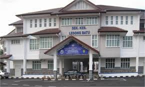

SELAMAT DATANG KE PERPUSTAKAAN DIGITAL SEKOLAH KEBANGSAAN LESONG BATU
Demi memastikan hala tuju pendidikan negara mempunyai garis ukur yang jelas, Kementerian Pendidikan mensasarkan untuk menjadikan Malaysia sebagai negara membaca menjelang 2030. Ini kerana tidak dinafikan masyarakat yang berilmu ialah masyarakat yang gemar membaca. Seiring dengan itu maka pihak sekolah mengambil inisiatif untuk mewujudkan Perpustakaan Digital ini agar murid-murid SK Lesong Batu khususnya dapat mengamalkan sikap suka membaca tidak kira bila atau di mana mereka berada. Situasi Pandemik COVID19 telah menyebabkan pergerakan murid terbatas kerana terpaksa mengikuti SOP yang telah digariskan untuk mengekang penularan wabak ini. Oleh itu murid sudah lagi tidak bebas untuk pergi ke perpustakaan sekolah seperti sebelum ini. Dengan adanya laman Perpustakaan Digital SK Lesong Batu ini pihak sekolah berharap agar murid-murid mendapat akses yang cukup ke perpustakaan walaupun secara maya. Pihak pengurusan PSS berusaha untuk mewujudkan laman ini agar murid-murid akan terasa berada seperti dalam perpustakaan secara fizikal walaupun hakaikatnya hanya melayari secara maya. Murid-murid boleh terus merekodkan pembacaan melalui sistem IQ-NILAM kerana pautan untuk sistem tersebut ada di dalam laman ini. Selain itu murid-murid juga boleh menjadi ahli kepada Perpustakaan Negara dan mereka boleh membaca atau meminjam buku secara maya.